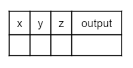

Using Objects and Methods
Compound assignment operators (复合赋值运算符) are shortcuts that do a math operation and assignment in one step.
means the same as:
Read the operator first, then the assignment: add, then store back.
| Written out | Compound |
|---|---|
x = x + 1 |
x += 1 |
x = x - 1 |
x -= 1 |
x = x * 2 |
x *= 2 |
x = x / 2 |
x /= 2 |
x = x % 2 |
x %= 2 |
The left-side variable receives the new result after the operation.
If you are unsure whether to write += or =+, use the meaning.
+ is done first.=.+=.The same pattern works for -=, *=, /=, and %=.
Because changing a variable by one is common, Java provides:
x++: increment (递增) x by 1y--: decrement (递减) y by 1Equivalent forms:
All three update x by one.
Predict each output before running.
Expected output:
Now add:
3 to scorescore by 2Required operators: += and /=.
Real Java code may use ++x or x++.
x++ uses the current value first, then changes it++x changes the value first, then uses itAP CSA will not use the prefix form, and it will not use postfix in a context where the expression value matters.
If x starts as 10:
prints 10, then x becomes 11.
If x starts as 10:
prints 11, and x is 11 afterward.
For this course, prefer clear updates on their own line.
What are the final values?
Answer:
Reason: subtract one from x, add one to y, then add the current y to z.
What are the final values?
Answer:
Reason: y / 2 uses integer division because both operands are int.
Code tracing (代码跟踪) means simulating a dry run through code line by line as if you are the computer.

Trace table example
Tracing can help:
A useful trace table has one column for each variable.
| Line | x |
y |
z |
|---|---|---|---|
| start | |||
after x++ |
|||
after y -= 3 |
|||
after z = x + z |
Add output or line numbers when they matter.
Use paper and pencil. Track x, y, and z after each line.
Do not skip lines. Compound operators still update the variable on the left.
Expected final values:
One possible trace:
| Step | x |
y |
z |
|---|---|---|---|
| initial values | 0 | 5 | 1 |
x++ |
1 | 5 | 1 |
y -= 3 |
1 | 2 | 1 |
z = x + z |
1 | 2 | 2 |
x = y * z |
4 | 2 | 2 |
y %= 2 |
4 | 0 | 2 |
z-- |
4 | 0 | 1 |
+=, -=, *=, /=, and %= into full assignment form++ and -- as one-step updates by 1/= or / uses only int values